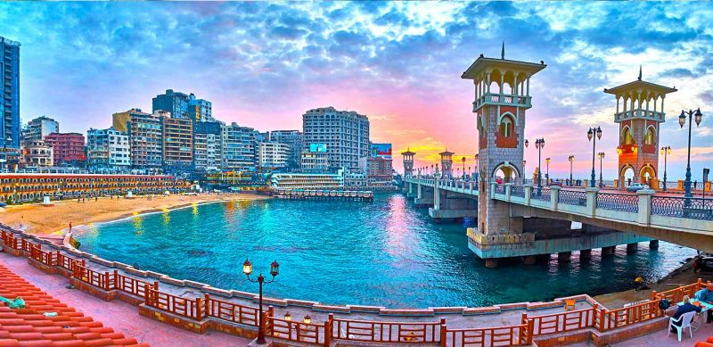

Modern EGYPT
“Traveling – it leaves you speechless, then turns you into a storyteller,” Ibn Battuta
About
-
Alexandria – a historic and elegant port city

Egypt’s second-largest city feels as Mediterranean and cosmopolitan as Marseille or Athens. Known for its époque buildings and grand squares it was once a very fashionable city. Although it charms have faded a little, it’s still a must-see destination in Egypt.
For peace and quiet head for the regal Montazah Palace Gardens or for your history and architecture fix try Citadel of Qaitbay, an impressive looking 15th-century fortress. Alternatively, choose one of the many antique coffee houses and sip coffee and puff on a water pipe while looking out over the Mediterranean sea.- - Other Places To Visit In Alexandria
- Bibliotheca Alexandrina
- Alexandria National Museum
- Corniche
- Cleopatra's Palace
- The Red Sea Coast – a beautiful diver’s paradise
A highlight of many a traveller to Egypt, Sharm el Sheik is a holiday resort filled with luxury hotels, casinos, nightclubs and tourists getting their sun, sea and sand fix. Sharm el-Sheikh holidays are very popular although the real beauty of this area is the Red Sea.
The Red Sea has clear azure waters and an incredible amount of exotic fish and coral – which is why is so highly regarded as a diving destination. In fact, it arguably offers some of the best diving and snorkelling experiences in the world. Get hold of some scuba gear (and an experienced instructor) and take a look for yourself – you won’t regret it.
- Dahab – a laid-back resort attracting backpackers and divers
Dahab is a laid-back resort town located on the Southeast coast of the Sinai Peninsula. This beautiful town attracts both hippies and travellers who want to stay in a peaceful location in Egypt that isn’t packed with tourists year-round. We love Dahab because of the incredible natural beauty of the place and it’s easily one of the most beautiful resorts in Egypt.
You will enjoy the golden sandy beaches with incredible ocean views that stretch across the Gulf to Saudi Arabia’s Hijaz Mountains. There is plenty of beauty under the water as well, with corals and marine fauna, which is why Dahab is considered one of the best locations for scuba diving and snorkelling on the peninsula.
The famous Blue Hole is also located near Dahab — a gaping sinkhole carved into a reef. Its beautiful sparkling-blue water is an amazing sight. You can also venture into the Bedouin desert to the West of Dahab. It is a serene location with plenty of places to explore.
- Marsa Alam – a gorgeous Red Sea beach resort

Marsa Alam is another gorgeous resort town to discover in Egypt. Situated on the Red Sea, it’s renowned for its pristine beaches and numerous coral reefs. Abu Dabab Bay is one of the most popular locations for visitors to Marsa Alam. It is a U-shaped natural bay with crystal clear water and plenty of wildlife, including turtles, dugongs, and dolphins.
The Wadi el-Gemal National Park is just south of the town. It is a large park with a varied landscape that includes islands, desert, seagrass beds, and coral reefs. You can spend many days exploring this national park and marvelling at its spectacular beauty.